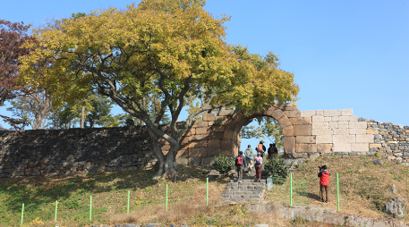
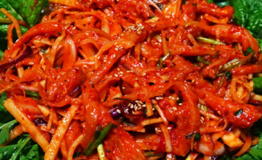
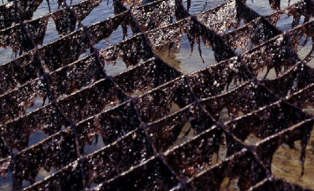
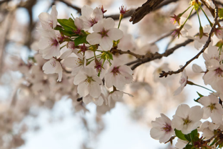

保寧9景+s
MORE-

大川海水浴場h
東洋唯一の貝殻粉の砂浜 四季の祭りの現場
-

竹島（尚和園）)
「竹が生い茂る島」ということから 「テソム（竹の島）」とも呼ばれる竹島（チュクト）
-
聖住山自然休養林
車嶺山脈が醸し出す美しさ 森が絶景を成す渓谷での森林浴
-

ケファ芸術公園
ハーブランド、音楽堂、碑林公園、 モサン美術館など大規模芸術総合団地
-

武昌浦海水浴場
海水浴と森林浴を同時に楽しめる モーゼの奇蹟が起きる武昌浦海岸道路
-
外煙島
周りの島を護衛しながら 率いているように見える素晴らしい景観の外煙島
-

忠清水営城
西海から侵入する外敵を防ぐために 石を高く積み上げた石城
-
冷風浴場
外部の温度が上がるほど 凉しくなる廃鉱の自然風
-

保寧湖
美しい周辺の景観、青い水面を眺めながら ドライブが楽しめる保寧湖
-
烏棲山
水彩画のように広がるススキの波、 頂上から眺める西海の落日
保寧9味
MORE-

川北カキ焼き
川北地域でたくさんとれる川北カキは、潮の干満の差がはなはだしいため、成長は遅いが、味と栄養に優れている。冬に炭火に焼いて食べるカキは、体を温めてくれます。
-

沙峴ぶどう
藍浦面沙峴里の土壌はぶどうの栽培に適切で、ここで生産されるぶどうは、全国最高の甘みと香りで消費者から愛されている。農薬の使用を減らし、高い栽培技術を通じて、他の地域よりも20日ほど早く収穫する。
-

イイダコ
チョコチュジャン(お酢のきいた唐辛子の味噌)につけて食べると、しこしことした歯ざわりが最高。このイイダコを炒め料理、刺身、和え物、鍋料理にして食べてもおいしい。
-

エイの和え物
西海岸の沖で釣ったばかりのエイに、きゅうりや、ごまなど各種の野菜と調味料で味をつけたエイの和え物は、こりこりして甘酸っぱい味が逸品で、全国から大勢のグルメがこの味を求めて保寧を訪れている。
-
渡り蟹のスープ
蟹は、脂肪が少なくたんぱく質が多いため、消化しやすく、味もさっぱりしている。また、必須アミノ酸が多く含まれており、成長期の子どもや、体の弱い人、お年よりによい。渡り蟹スープと蟹の醤油漬け、蟹の蒸し物などもおいしい。
-

保寧産岩のり
西海岸のきれいな海でとれた最高級ののりでつくった保寧産岩のりは、長期間ぱりっとした味と香りが続く。
-

タイラギ料理
タイラギは、たんぱく質が豊富でカロリーの低い食品で、必須アミノ酸と鉄分が多く含まれており、貧血や動脈効果の予防、産後の養生や美容にも良い。ロース焼き、鍋物、和え物、しゃぶしゃぶ、お粥、てんぷらにして食べるとおいしい。
-

貝焼き
ほたて貝、たいらぎ、さざえ等保寧の海から取った新鮮な貝といろいろな海産物を直接焼いて食べられることで保寧の海を味わうことができます。
-

海鮮うどん
様々な海産物で作った海の味がする汁と手作りのコシのある麺が食べられるうどんの一種類。さっぱりした汁と味で誰でも美味しく食べられます。
保寧物語
-

保寧マッドフェスティバル
- 毎年7月中旬
-
 大川海水浴場
大川海水浴場
-

川北牡蠣祭り
- 毎年12月中旬
-
川北面 長隠里 牡蠣団地内
-
パラグライダー
-
玉馬山
-
-

武昌浦 神秘の海の道祭り
- 毎年8月中旬
-
川北面 長隠里 牡蠣団地内
-

武昌浦 大海老・コノシロ祭り
- 毎年9月中旬～10月初旬
-
武昌浦港一帯
-

スカイバイク
-
聖住山の下に位置し
-
-
武昌浦 イイダコ･メイタガレイ祭り
- 毎年3月中旬～4月初旬
-
武昌浦港一帯
-

聖住山紅葉祭り
- 10月中
-
青少年修練館駐車場の特設ステージ
-

ジップトレック
-
大川海水浴場
-
-

珠山春の花祭り
- 4月中
-
花山川辺のステージ
-
大川冬の海の恋祭り
- 12月中
-
大川海水浴場一帯
-

エキサイティング保寧
-
大川海水浴場一帯
-